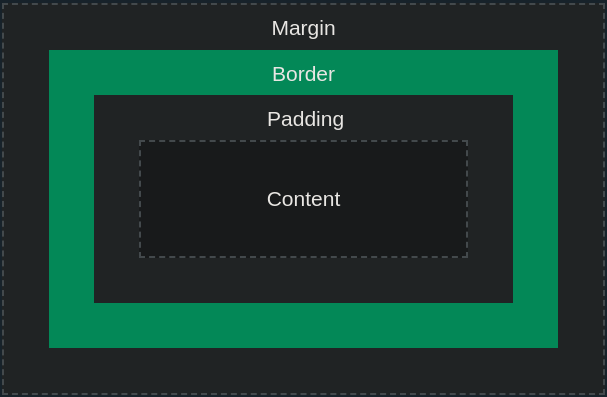
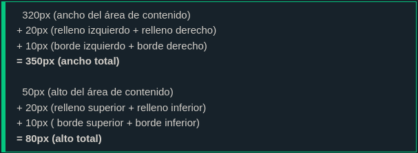

Todos los elementos HTML pueden considerarse cuadros.
En CSS, el término "modelo de caja" se utiliza cuando se habla de diseño y disposición.
El modelo de cuadro CSS es esencialmente un cuadro que envuelve cada elemento HTML. Consta de: contenido, relleno, bordes y márgenes. La siguiente imagen ilustra el modelo de caja:
Explicación de las diferentes partes:
Contenido: el contenido del cuadro, donde aparecen el texto y las imágenes.
Padding: borra un área alrededor del contenido. El acolchado es transparente.
Border: un borde que rodea el relleno y el contenido.
Margin: borra un área fuera del borde. El margen es transparente.
El modelo de caja nos permite agregar un borde alrededor de los elementos y definir el espacio entre elementos.
Para establecer correctamente el ancho y el alto de un elemento en todos los navegadores, necesita saber cómo funciona el modelo de caja.
Importante: cuando configuras las propiedades de ancho y alto de un elemento con CSS, simplemente estableces el ancho y el alto del área de contenido . Para calcular el ancho y alto total de un elemento, también debes incluir el relleno y los bordes.
Aquí está el cálculo:
El ancho total de un elemento debe calcularse así:
Ancho total del elemento = ancho + relleno izquierdo + relleno derecho + borde izquierdo + borde derecho
La altura total de un elemento debe calcularse así:
Altura total del elemento = altura + relleno superior + relleno inferior + borde superior + borde inferior
Nota: La propiedad de margen también afecta el espacio total que ocupará el cuadro en la página, pero el margen no está incluido en el tamaño real del cuadro. El ancho y alto total del cuadro terminan en el borde.